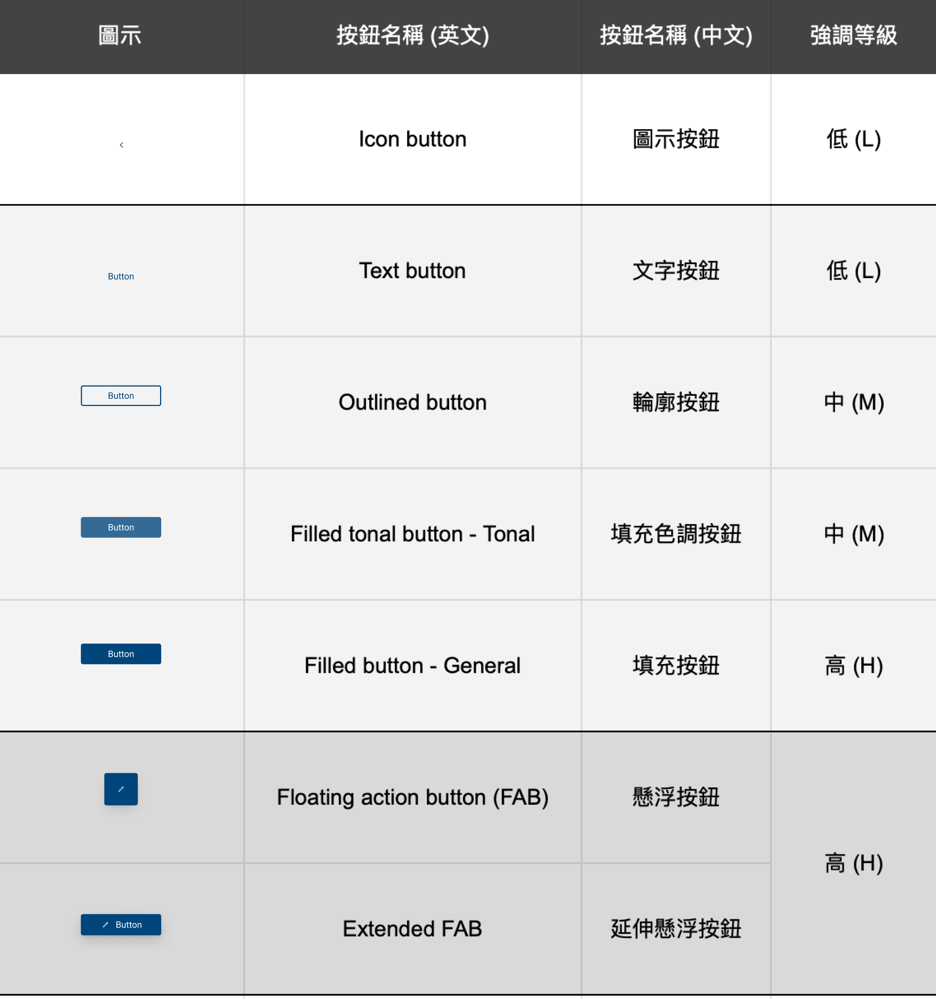

Buttons 按鈕
概述
按鈕讓人們一鍵即可採取行動，並做出選擇，是使用者介面中不可或缺的元件，它們引導使用者執行特定操作行為。
使用時機
按鈕常用於以下情境：
- 觸發動作：當需要讓使用者執行特定動作時。
- 提供選項：當需要讓使用者在一組選項中進行選擇時。
- 引導使用者：當需要引導使用者完成特定任務或流程時。
使用規範
當您取用按鈕元件進行設計時，應考慮以下原則：
- 目標區域
- 大小適中：按鈕應有足夠的大小，讓使用者容易點擊或觸碰，特別是在行動裝置上。過小的按鈕容易誤觸或被忽略。
- 間距合理：按鈕之間應有適當的間距，避免過於擁擠，導致使用者誤觸其他按鈕。
- 位置易見：按鈕應放置在使用者容易看到和觸及的地方，符合操作流程和視覺動線。
- 狀態變化
- 視覺提示：按鈕的不同狀態應有明顯的視覺區別，讓使用者清楚辨識按鈕的當前狀態。
- 即時回饋：當使用者與按鈕互動時，應提供即時的回饋。
- 使用者預期與習慣
- 遵從常見模式：採用使用者熟悉的按鈕樣式和互動方式。
- 考慮情境：針對不同的使用情境（如桌面、行動裝置、觸控螢幕），調整按鈕的大小、間距和互動方式，以提升易用性。
- 一致性
- 在整個應用程式中，相同類型的按鈕應具有相同的視覺表現和互動行為，以建立一致的使用者體驗。
分類總表

設計範例
- 圖示按鈕（Icon Button）
- 定義：僅使用圖示的按鈕，適用於已廣為人知或簡單直覺的操作。
- 用途：常用於工具列、導覽列等空間有限的地方，提供常常用功能的快捷入口。也可用於觸發簡單的動作，如播放/暫停、喜歡/收藏、編輯/刪除等。
- 注意事項：常見語彙之對應圖示應使用國際通用符號，避免自創造成使用者混淆。若需自定義圖示，則力求清晰易懂，避免使用過於抽象或複雜的圖案。對於自定義或含義不明確的圖示，建議提供
Tooltip 輔助說明。
- 文字按鈕（Text Button）
- 定義：僅顯示文字的按鈕，適用於操作名稱明確，不需要額外圖示輔助的情況。
- 用途：常用於表單提交、對話框確認等需要明確指示操作的場景，也可用於連結、導航等。
- 注意事項：字串應簡潔明瞭，避免過長。文字按鈕亦可搭配圖示，增加視覺吸引力或輔助說明。
- 輪廓按鈕（Outlined Button）
- 定義：僅有邊框、無背景色填充的按鈕，視覺強調效果最低。
- 用途：常見於次要操作，例如「取消」、「稍後再說」等，或是在一組按鈕中表示替代或不那麼重要的選項。
- 注意事項：可與填充按鈕搭配使用，建立視覺層級。
- 填充色調按鈕（Filled Tonal Button）
- 定義：背景色為淡色填充的按鈕，視覺強調效果介於填充按鈕和輪廓按鈕之間。
- 用途：用於次要但仍需一定強調的操作，例如引導使用者進行下一步的按鈕（如「繼續」、「下一步」），或是在一組按鈕中需要區分主要和次要動作的情況。
- 填充按鈕（Filled Button）
- 定義：背景色完全填充的按鈕，具有最高的視覺強調效果。
- 用途：用於強調重要操作，通常是頁面或流程中的主要動作，例如「確認」、「提交」、「儲存」等。
- 注意事項：請避免在同一介面中過度使用填充按鈕，以免造成視覺混亂和使用者難以區分按鈕的重要性。
- 懸浮按鈕（Floating Action Button, FAB）
- 定義：懸浮於介面之上的全域性按鈕。
- 用途：每個頁面僅使用一個懸浮按鈕，代表該頁面最主要的操作，例如新增、分享、建立等。
- 注意事項：懸浮按鈕應代表積極正向的操作，避免用於刪除或其他負面行為或反向操作。請確保懸浮按鈕在不同螢幕尺寸下都能清晰顯示。
- 延伸懸浮按鈕（Extended Floating Action Button）
- 定義：結合懸浮按鈕與文字標籤，提供更明確提示的全域性按鈕。
- 用途：僅在懸浮按鈕本身無法清楚達操作意圖時使用，提供比懸浮按鈕更多的上下文資訊。
- 注意事項：文字標籤應簡潔明瞭，避免過長。
強調分級
高強調按鈕（High Emphasis Buttons）
- 適用範圍：針對螢幕上的主要、最重要或最常見的操作。
- 代表範例：填充按鈕、懸浮按鈕、延伸懸浮按鈕。
- 留意事項：
- 一個布局中建議僅容納一個高強調按鈕，以區分其他按鈕的重要性。
- 請勿在按鈕組中同時使用兩個高強調按鈕，建議以高重點+中/低強調按鈕作搭配。
中強調按鈕（Medium Emphasis Buttons）
- 適用範圍：用於不會分散其他螢幕元素注意力的重要操作。
- 代表範例：輪廓按鈕、填充色調按鈕。
低強調按鈕（Low Emphasis Buttons）
- 適用範圍：用於一般導覽列、表單選項或補充行動。
- 代表範例：文字按鈕、圖示按鈕。